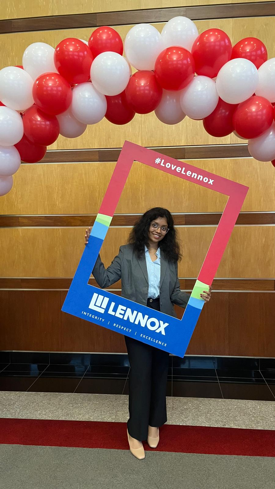

From My Desk ✒️

From Forecasts to Field Tests: My Summer at Lennox International
A hands-on immersion into building real-world, impactful AI systems at Lennox International. From developing multivariate time-series forecasting models to collaborating across teams, this summer internship was transformative in many ways.
Read Article
From Silence to Spotlight: My Return to the Stage
After six years away from the stage, I rediscovered my love for dance and performance with ASU Aalishaan. From spontaneous auditions to national competitions, this is the story of finding my spotlight again.
Read Article